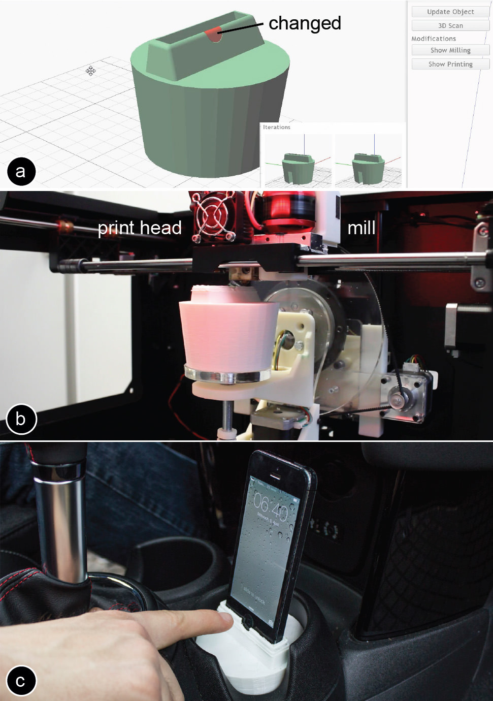

Publication
Mueller, S., Im, S., Gurevich, S., Teibrich, A., Pfisterer, L., Guimbretière, F., and Baudisch, P.
Patching Physical Objects.
In Proceedings of
UIST ’14
, pp. 273-280.
Demo at UIST'14
DOIPaperVideoSlidesUIST Talk
Press

Figure 1: To minimize material consumption and to reduce waste during design iteration, we propose patching the existing object rather than reprinting it from scratch. (a) First, our software calculates which part changed, then (b) a mill removes outdated geometry, followed by a print head that prints the new geometry.
Personal fabrication is currently a one-way process: once an object has been fabricated with a 3D printer, it cannot be changed anymore. Any change requires printing a new version from scratch. The problem is that this approach ignores the nature of design iteration, i.e. that in subsequent iterations large parts of an object stay the same and only small parts change. This makes fabricating from scratch feel unnecessary and wasteful.
In this paper, we propose a different approach: instead of re-printing the entire object from scratch, we suggest patching the existing object to reflect the next design iteration. We built a system on top of a 3D printer that accomplishes this: Users mount the existing object into the 3D printer, then load both the original and the modified 3D model into our software, which in turn calculates how to patch the object. After identifying which parts to remove and what to add, our system locates the existing object in the printer using the system’s built-in 3D scanner. After calibrating the orientation, a mill first removes the outdated geometry, then a print head prints the new geometry in place.
Since only a fraction of the entire object is refabricated, our approach reduces material consumption and plastic waste (for our example objects by 82% and 93% respectively).